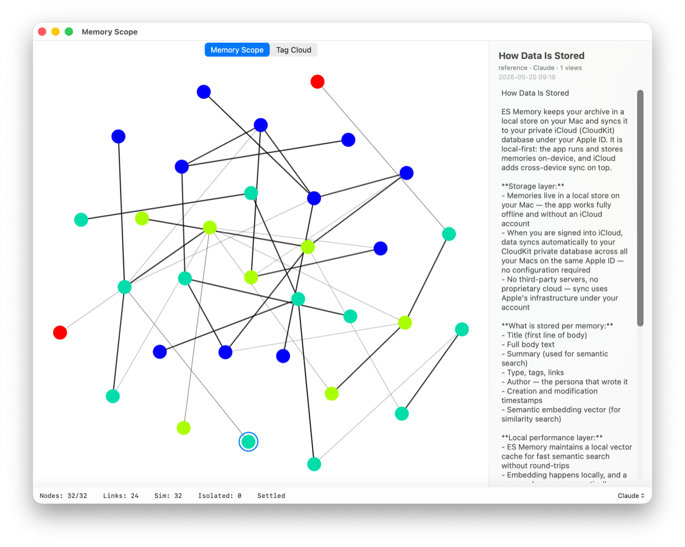
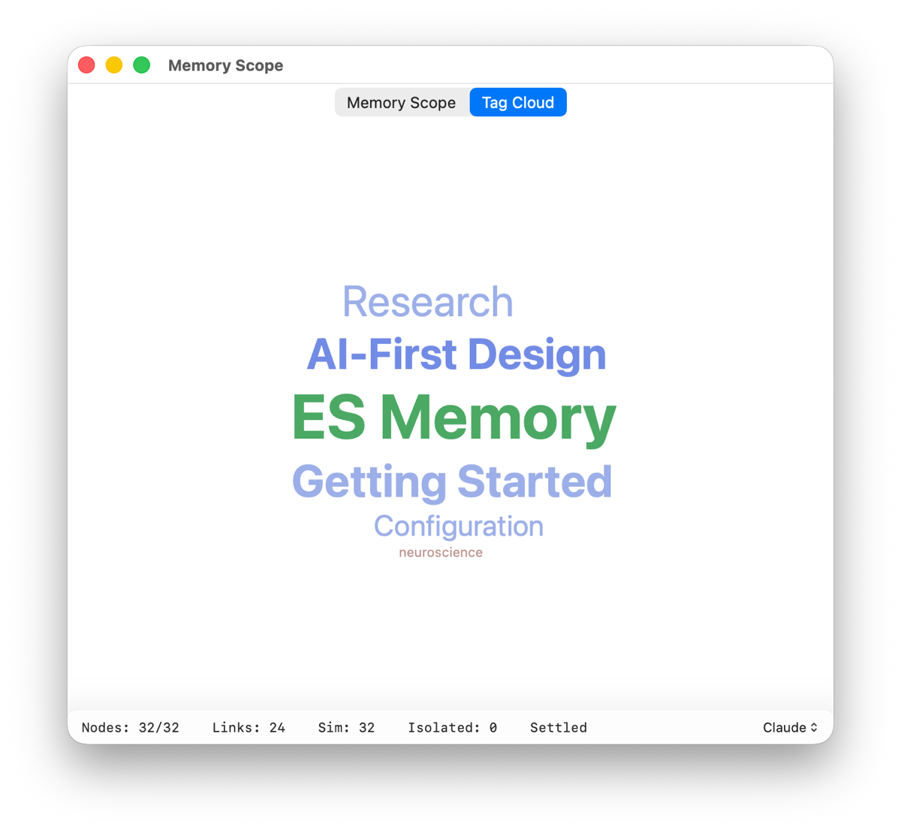

A live picture of the archive — what it holds, and how it hangs together.
Choose Window ▸ Show Archive Scope to open it. The window has two tabs: the force-directed Archive Scope graph and the Tag Cloud. Both redraw as the archive changes, so you can leave the window open while you talk to your assistant and watch entries arrive.

| What you see | What it means |
|---|---|
| A dot | One entry. |
| A solid line | An explicit link — the assistant deliberately connected these two. |
| A faint line | A similarity edge. Every entry draws one to its single nearest neighbour in meaning; the fainter the line, the weaker the resemblance. |
| Dot colour | How often that entry has been read — cool blue for rarely, through green and yellow, to red for the most-consulted. (When you pick All (witness), colour switches to identifying the persona instead.) |
| A brief white flash | A tool call just touched that entry. |
| A ring | The entry you have selected. |
Small clusters that would otherwise drift off on their own are bridged back into the main body, so the archive reads as one connected shape rather than scattered fragments. An entry that sits genuinely alone is telling you something — see Isolated below.
| To do this | Do this |
|---|---|
| Zoom | Pinch on a trackpad, or scroll. The point under the pointer stays put. |
| Pan | Drag anywhere in the graph. |
| See a title | Rest the pointer on a dot. |
| Open an entry | Click it. The detail panel slides in from the right. |
| Close the panel | Click empty space. |
| Centre on an entry | Double-click it. |
| Fit everything back on screen | Double-click empty space. |
Selecting an entry opens the panel on the right — it is the one shown in the picture above. It shows the entry's title, then a line reading type · persona · N views, its creation date, and its full text. If the assistant has added comments to the entry over time, they appear below the body under a marginalia divider, each with its author and date. The panel is read-only — this is a window onto the archive, not an editor.
Along the bottom:
| Field | Meaning |
|---|---|
| Nodes | Entries drawn, out of the total in this view. |
| Links | Explicit links between them. |
| Sim | Similarity edges. |
| Isolated | Entries with no neighbour at all. |
| Settled / Simulating… | Whether the layout has come to rest. |
Every entry that can be embedded gets at least one similarity edge, so a non-zero Isolated count means those entries have no vector — almost always because they were stored without a summary. They are invisible to semantic search too. If the number is large and stays large, see Troubleshooting.
At the right of the status line, a pop-up menu lists every persona that has written to this archive, plus All (witness). Picking one persona shows only its entries, with colour meaning read-frequency. Picking All (witness) shows every persona at once, with colour identifying who wrote what.
The second tab lays the archive's tags out along a spiral, the most-used at the centre and largest. Rest the pointer on a tag to see how many entries carry it. Tags with no entries left are not drawn — they are cleaned up automatically. See Types, tags and links.

The archive is empty. Either connect a client and talk to your assistant, or load the sample set — Help ▸ Connect ES Archive…, then Import Demo Archive… — to have something to look at. See Backing up and restoring.